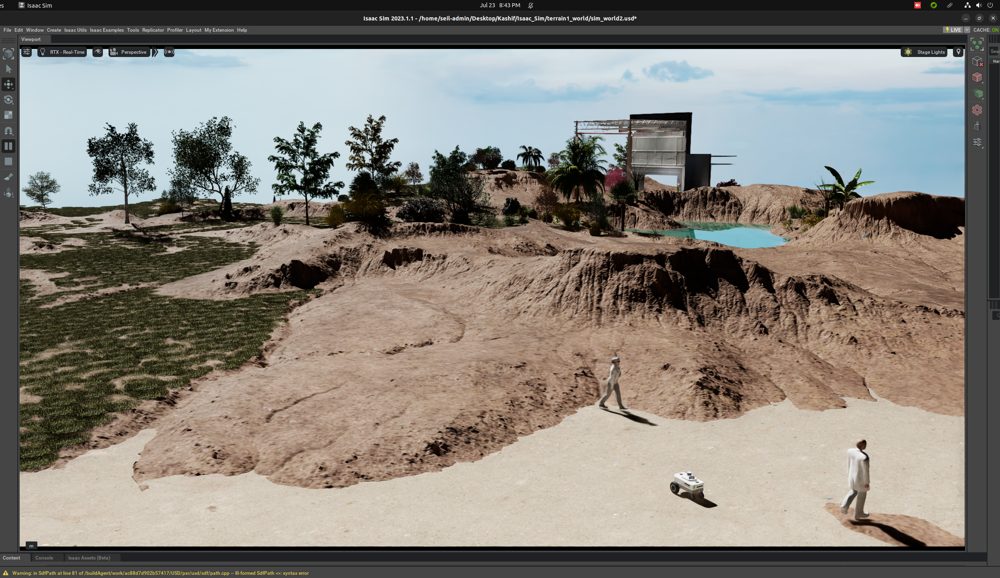

seil-r2
ROS2-based Autonomous Ground Robot Navigation Stack.
This is an open-source project. Please do not include any ARL proprietary material.
Current working environment:

The local seil-r2 repo is in the SEIL HPC admin profile and has been pre-built. Just source it and you are ready to run:
cd research/seil-r2
source install/local_setup.bashIf using on a different machine, make sure to build and source the workspace.
cd seil-r2
colcon build
source install/local_setup.bashGeneral Guidelines
The main branch serves as the baseline implementation of IsaacSim carter navigation. It is currently configured to run Nav2 using AMCL and an apriori map to navigate.
There are dedicated branches available for different configurations.
The IsaacSim environments can be found in the isaac_envs folder. Gazebo worlds in the gazebo_envs folder. Both these folders have world files taht are too big and cannot be added to the online repo– added the folders to .gitignore.
We will merge branches gradually improving the baseline.
Tasks
- Add new launch files for various GP+LC combinations: NavFn+MPPI, Smac-A*+MPPI, Smac-SL+MPPI, etc.
- Configure the Carter bot to publish the depth image and the depth point cloud from its stereo Cameras.
- Get the slam-toolbox_Nav2 branch working reliably and merge it with main to create the new baseline.
- Get the rtabmap slam branch working and merge with main for more SLAM options.
- Implement BTs for complex mission scenarios and add corresponding launch files.
- Create a new branch for multi-robot spawn and launches.
- Create a new branch for implementing ros2-security profiles.
- Create a new branch for Gazebo based development.
- Create a new branch for Robust path planning- Clinton
- Create a new branch for lambda mapping. - Dimitris
- Create new branches for TRADES-X and VERITAS implementations.
Branches
- main: Baseline implementation of Isaac Sim carter navigation.
- rtabmap: Branch for testing rtabmap with Nav2.
- multi-robot: Branch for multi-robot spawn and launches.
- secure-sel-r2: Branch for implementing ros2-security profiles.
- trades-x-prob-inference: Branch for TRADES-X implementation.
- robust-path-planning: Branch for robust path planning.
- lambda-mapping: Branch for lambda mapping.
Updates
Depth Image and Point Cloud
We have a working demo using the nvblox demo warehouse scene that comes packaged with the Isaac SDK. The stereo camera on this carter is configured to publish the depth image and the depth point cloud. The depth pointcloud is published as the topic depth/ground_truth/point_cloud . You will need to select the front_hawk action graph and select the depth_pcl output pipeline to enable the depth point cloud. By default, it is set to publish the 2D depth image.
See the demo below: